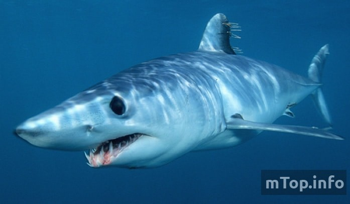
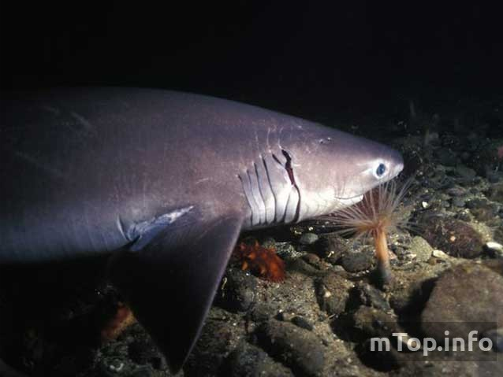
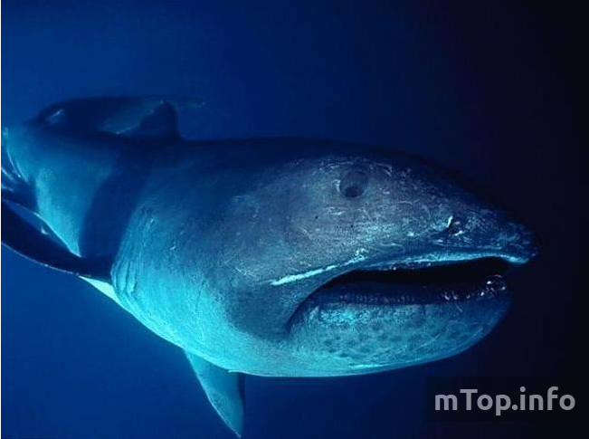
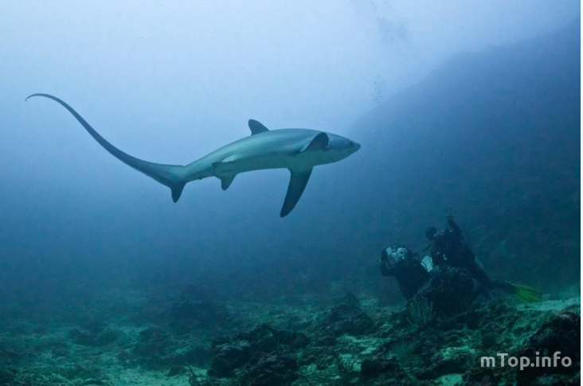
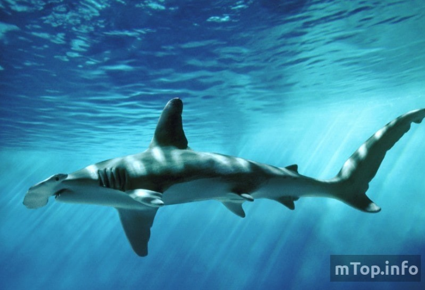
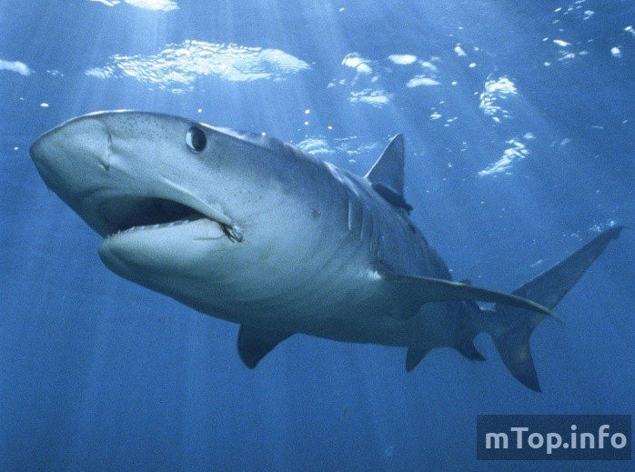
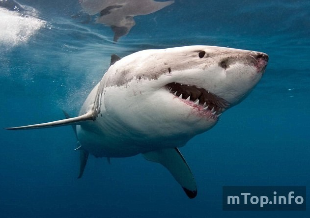
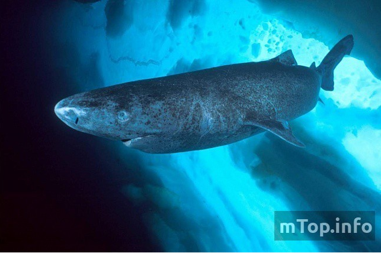
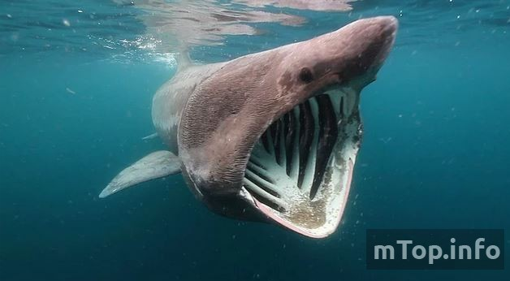
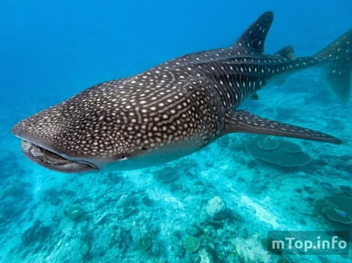

10. Акула-мако
Это не только одна из самых больших, но и одна из самых агрессивных акул. Характер они проявляют уже в материнской утробе – эмбрионы активно борются за право жить. Естественный отбор делает свое дело, и на свет появляются наиболее опасные особи.
Длина мако – до 3,5 м. Крупнейший экземпляр удивил рыбаков размером в 4,5 м. Как и знаменитая белая акула, мако может быть опасной для человека. С белой эту роднит даже внешний вид. Но в большинстве случаев нападения на людей вызваны вторжением последних в «сферу влияния» мако. Хотя случаются и неприятности, вызванные чрезмерной агрессией белоподобного вида.
Кроме прочего, мако очень проворны и быстры. Предельная скорость перемещения габаритной акулы – 70 км/ч. Аэродинамичная водная обитательница из семейства сельдевых способна выпрыгивать из воды на высоту до шести метров.
9. Шестижаберная акула
Максимальная длина, подтверждённая официально – 5,4 м. Это и делает шестижаберку участницей этого рейтинга. Но размеры рядовых представителей вида скромнее – в пределах 3-4 метров.
Для человека опасности не представляет. Но прикосновений дайверов не любит и даже не выносит. В подобных ситуациях она просто устремляется на глубину. А устремиться она может – её возможности позволяют опускаться акуле с шестью жабрами на глубину до 2,5 км.
Обычно одна из крупнейших акул довольно медлительна и неповоротлива. Но, атакуя, она преображается – становится резкой и быстрой.
8. Большеротая пелагическая акула
Далее – большеротая акула, напоминающая «лицом» космических пиратов без маскировки из детского сериала «Гостья из будущего». Эти красавцы (акулы, в смысле) плохо изучены, да и открыты были относительно недавно – в семидесятых годах. На текущий момент обнаружено всего лишь 60 глубоководных большеротиков. Наиболее габаритная из них акула достигает в длину 5,7 м.
7. Лисья акула
В рейтинг морская лисица попала благодаря огромному хвостовому плавнику. Вместе с ним хищница достигает в длину около 6 м. Но, поскольку из тела хвост не выкинешь, хитрая представительница акул резонно занимает высокую позицию.
Несмотря на хищный нрав, этот вид для человека не опасен. Царь природы у акулы-лисицы вызывает страх, и «хвостливая» хрящевая рыбешка нападает только на менее крупных морских коллег.
Длинный хвост акулы используют в качестве хлыста. Им они оглушают добычу. В английском языке у них есть особенное, дополнительное, название – акула-молотилка.
Огромная морская лисица способна полностью выпрыгивать из воды. Это быстрые и мощные хищницы.
6. Акула-молот
Эта акула впечатляет не столько размерами, сколько «дизайном». Молотообразное рыло не делает рыбку писаной красавицей, но определённо возводит в ранг наиболее оригинальных морских созданий.
Средние габариты «молотков» — 3 метра. Но предельная длина, которая зафиксирована официально – 6,1 м. Это потенциально агрессивная и опасная рыба, и от неё лучше держаться подальше. Но статистика говорит, что людьми акулы-молоты интересуются нечасто. Кому доверять – статистике или вероятности – решать дайверам.
5. Тигровая акула
Фотки самых больших акул обязательно включают в себя изображения тигровых видов. Средние габариты морских тигриц – 5 м. Есть все основания предполагать, что в океанах полным-полно тигровых акул размером не менее 7 метров.
Гигантскую тигрицу нужно опасаться – это не только очень большая, но и достаточно агрессивная акула. В желудках этих рыб часто находят человеческие останки. В некоторых странах тигровых акул настолько много, что в целях обеспечения безопасности людей их отстреливают.
4. Белая акула
Самый известный вид, у любого нормального человека вызывающий, как минимум, смешанные эмоции. Акула-людоед известна агрессивностью, мощнейшими челюстями и огромным количеством человеческих жертв. Белая акула – величайшая актриса, появлявшаяся в фильмах огромное число раз.
Самая большая белая акула (из тех, которые были выловлены) была длиной 7,9 м. Есть информация, что океаны бороздят и экземпляры покрупней – до 12-13 м. Но средний размер хищниц составляет 4-5 м. Средний вес – 0,6-1,2 т.
Несмотря на популярность и репутацию, этот вид относится к исчезающим – по прикидкам ихтиологов, в мире осталось около 3,5 тысяч кархародонов-убийц.
3. Полярная гренландская акула
Эта огромнейшая симпатяжка с модельным взглядом – одна из самых габаритных и медлительных акул. Обычный размер полярной акулы – 6-7 м. А вот скорость подкачала – передвигается северный вид не быстрее 2,5 км/ч. Даже для полуторатонной рыбехи это очень мало, но таковы условия её обитания – низкая температура не располагает акул к маневренности и резвости.
С такой неторопливостью можно было бы и с голоду умереть, но полярная красотка выискивает жертв по себе. Всё, что ей остаётся – нападать на спящих в воде тюленей.
2. Гигантская (или исполинская) акула
На втором месте гигантская акула – самая большая из относительно опасных акул. Фото не из самых приятных – от разинутой пасти и страшно, и мерзко. Размер самок – около 10 м. Самцы немного мельче. Пару веков назад рыбаки вылавливали и 12-метровых экземпляров. Есть мнение, что и сегодня вполне можно натолкнуться на действительно гигантскую акулу – длиной до 15 м.
Впрочем, вероятность встречи даже с рядовым представителем вида очень невысока – из-за массового истребления этих акул осталось немного. Питается страшилка планктоном и мелкой рыбешкой, но человеку лучше к ней не подплывать. У акулы острая чешуя, которая запросто может поранить.
Вы уже в шаге от того, чтобы узнать, сколько весит самая большая акула, о размерах последней и о её рационе.
1. Китовая акула
Самая крупная акула на планете – китовая акула. Средняя длина – 12-15 м, но не редкость и более внушительные габариты – 18-20 м. Вес самого габаритного экземпляра – 36 т.
Чтобы утолить голод, китовому «среднеразмернику» требуется не менее 200 кг планктона. О том, что самая самая акула в мире питается мелочевкой, наверное, знает чуть ли не любой школьник.
Мегалодон
Какая хитовая подборка без сюрпризов? У многих, возможно, возник вопрос – причём здесь ещё один вид, если мы уже определились с первой позицией? На самом деле рыба-кит действительно наиболее габаритна. Но — в современных реалиях. Среди вымерших видов лидирует другая рыба.
Акула мегалодон – безусловный рекордсмен тех, далеких, времен и видов. К сожалению, на видео самая большая акула не попала – ископаемая рыбка исчезла задолго до развития наших технологий. По прикидкам ученых, размер мега-рыбы был в пределах 12-18 м. При этом самая большая акула в мире мегалодон была тяжелей современной китовой – около 50 т. Благодаря размерам, питалась акула даже себе подобными, но более мелкими, видами.